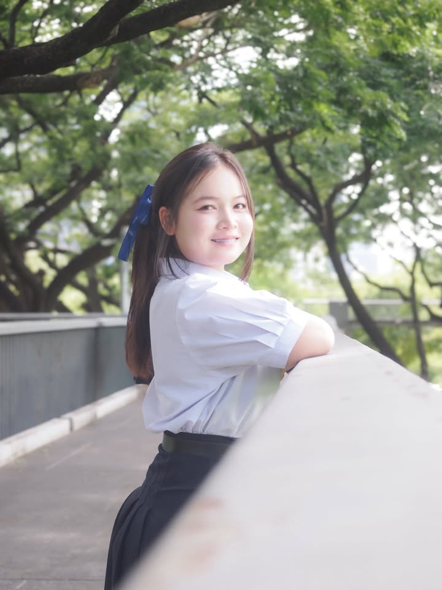
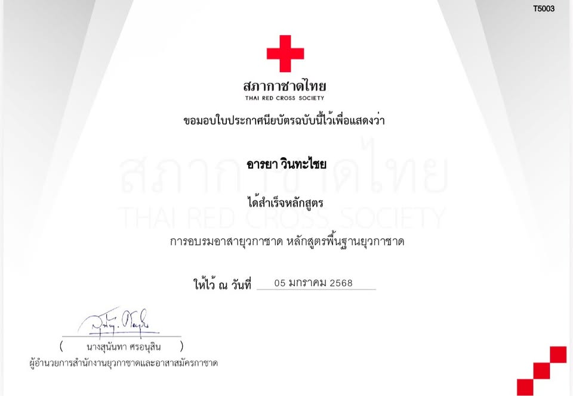
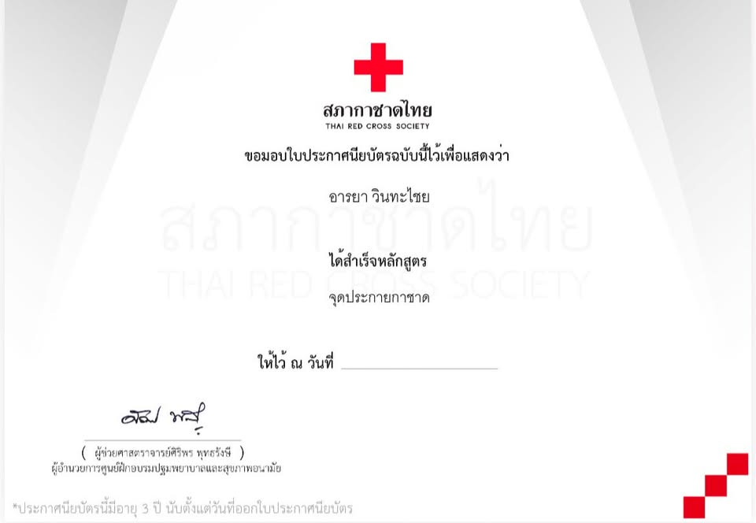
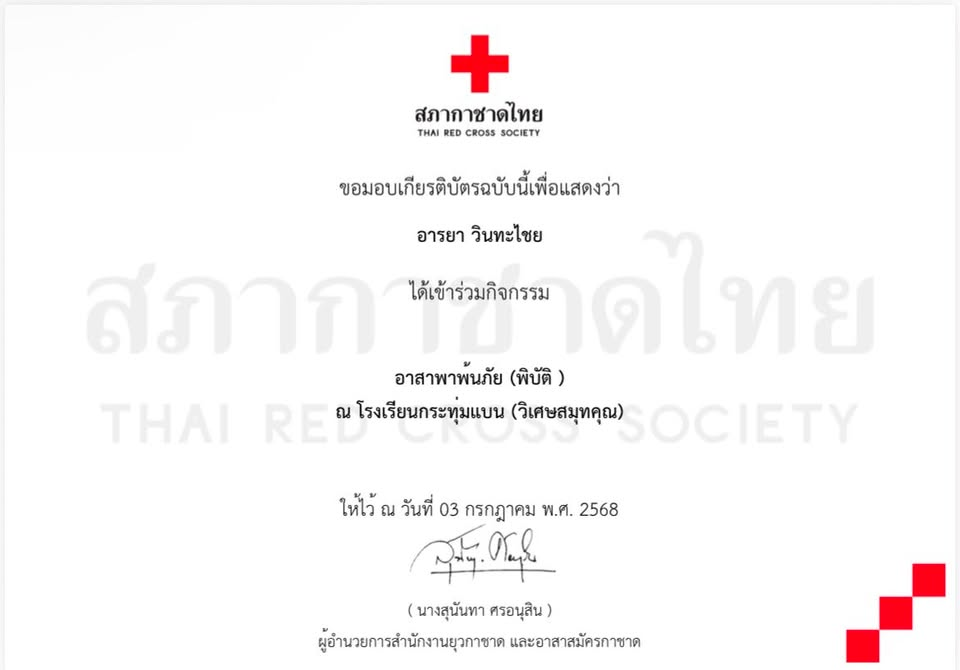
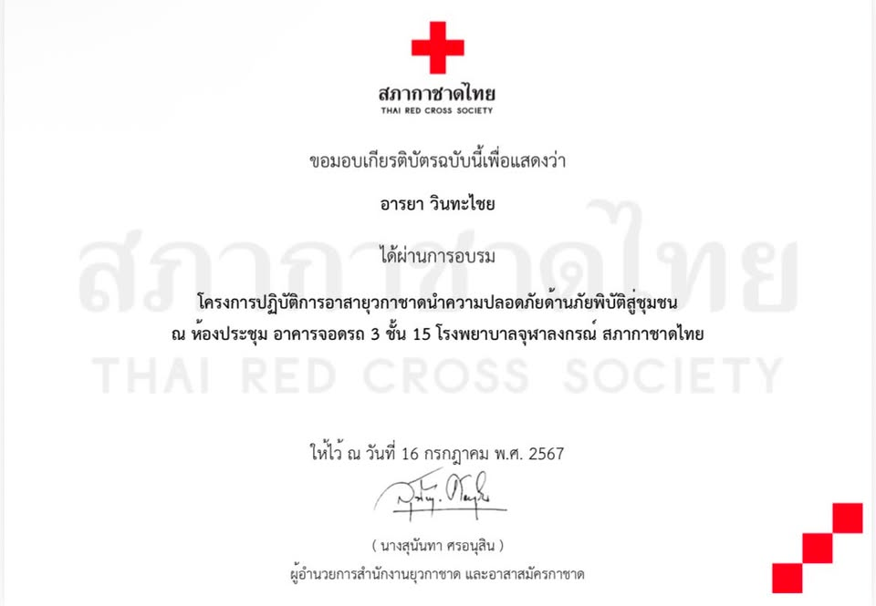
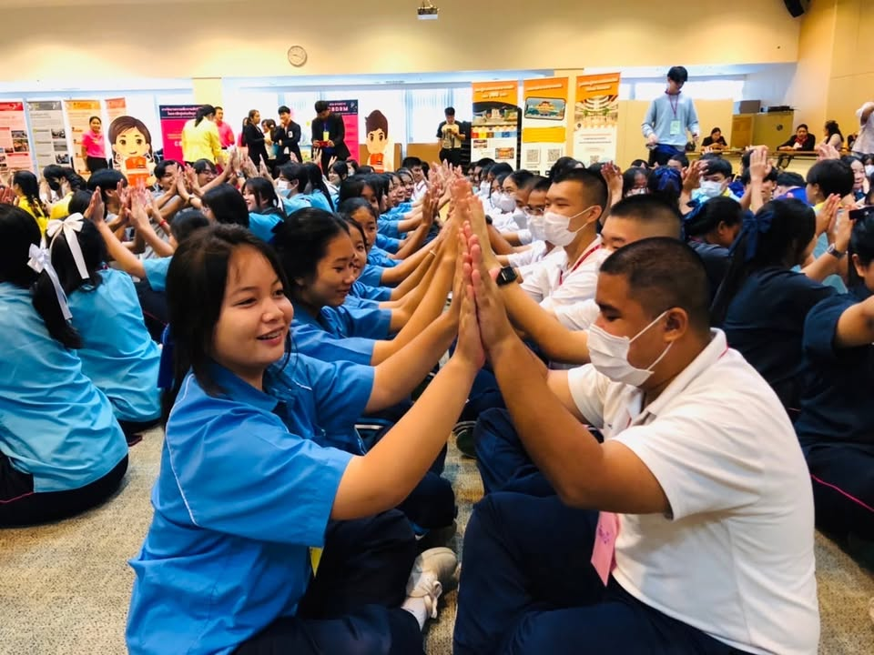
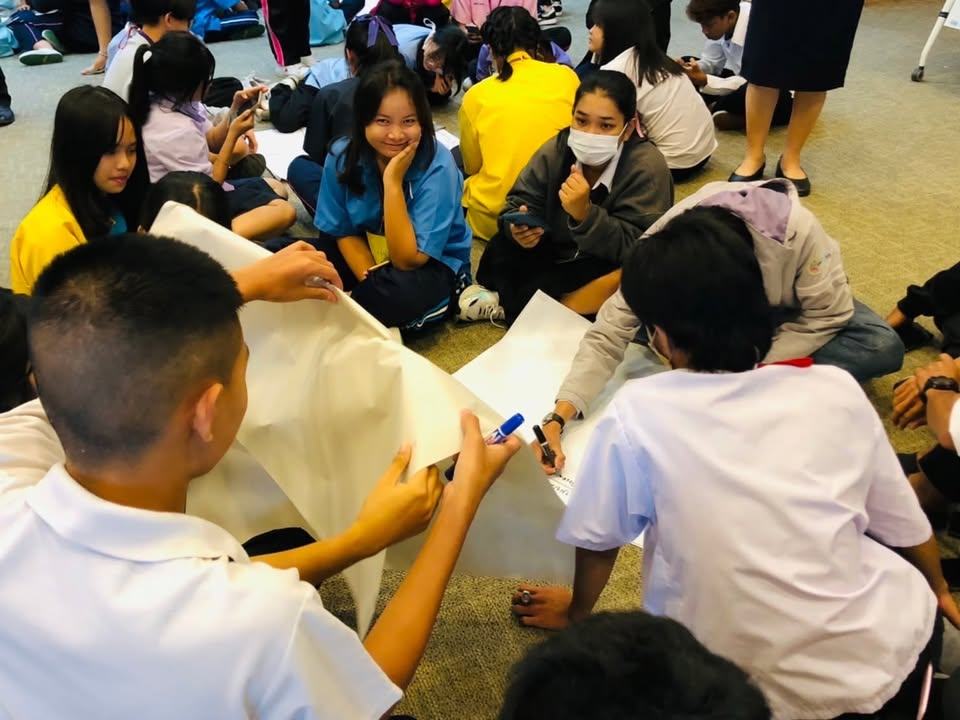
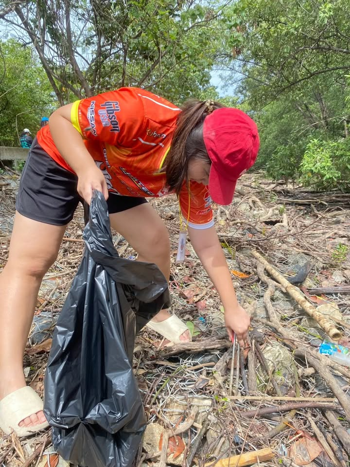
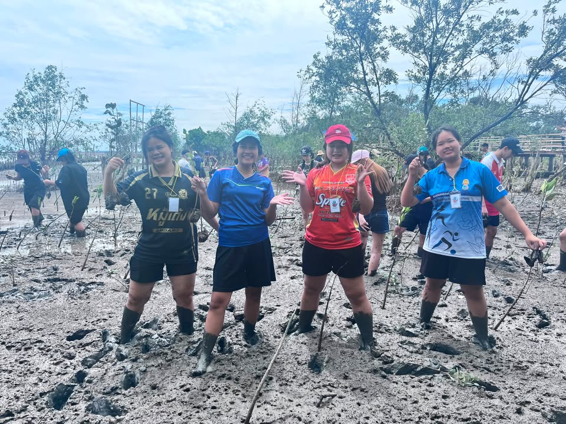

Portfolio for Admission Faculty of Nursing Mahidol University
View Portfolio
ชื่อเล่น : เฟิร์น
กำลังศึกษาชั้นมัธยมศึกษาปีที่ 6
แผนการเรียน คณิตศาสตร์-ภาษาอังกฤษ
มีความรับผิดชอบ ซื่อสัตย์ อดทน ชอบช่วยเหลือผู้อื่น และมีความใฝ่ฝันที่จะเป็นพยาบาล
โรงเรียนกระทุ่มแบนวิเศษสมุทคุณ
โรงเรียนกระทุ่มแบนวิเศษสมุทคุณ
ดิฉันมีความมุ่งมั่นที่จะเข้าศึกษาต่อในคณะพยาบาลศาสตร์ เนื่องจากเป็นคณะที่อยู่ในความฝันของดิฉันมาตั้งแต่วัยเด็กตอนนั้นปู่ย่าเคยบอกกับดิฉันว่าอยากให้ฉันทำอาชีพที่มีความมั่นคงการงานที่ดีดูแลปู่ย่ายามเจ็บป่วยได้จึงทำให้ฉันรู้สึกว่าฉันอยากเรียนพยาบาลเพื่อที่จะดูแลรักษาคนในครอบครัวยามป่วยไข้ แต่เมื่อเติบโตขึ้น ดิฉันได้ตั้งคำถามกับตัวเองอยู่เสมอว่าสิ่งนี้เป็นเพียงความฝันในวัยเด็ก หรือเป็นเพียงสิ่งที่ดิฉันต้องการทำจริง ๆ ในอนาคต จนกระทั่งได้มีโอกาสเข้าร่วมกิจกรรมและสัมผัสงานด้านการพยาบาลมากขึ้น ทำให้ดิฉันมั่นใจว่าการเป็นพยาบาลคือเส้นทางที่ดิฉันต้องการเดินต่อไป สำหรับดิฉัน การเรียนพยาบาลนั้นดูยากมากแถมยังเรียนหนักและเกิดความเครียดได้แต่ดิฉันก็เชื่อว่าถ้ายังไม่ลองทำเราก็ไม่สามารถรู้ได้เลยว่าเราจะทำได้หรือไม่ ดิฉันได้มีโอกาสเข้าร่วมอบรมของสภากาชาดไทยในด้านต่างๆ ซึ่งทำให้ดิฉันนั้นได้เรียนรู้เกี่ยวการช่วยเหลือผู้อื่น การปฐมพยาบาลเบื้องต้นและการทำงานเพื่อสังคม นอกจากนี้ ดิฉันยังเคยเข้าร่วมการแข่งขันทักษะการปฐมพยาบาลเบื้องต้น ซึ่งช่วยพัฒนาความรู้ ความรอบคอบ การตัดสินใจเฉพาะหน้า และการทำงานร่วมกับผู้อื่นภายใต้สถานการณ์ที่มีความกดดันอีกหนึ่งประสบการณ์สำคัญที่ทำให้ดิฉันเห็นภาพของวิชาชีพพยาบาลชัดเจนยิ่งขึ้น คือการเข้าฝึกประสบการณ์ที่โรงพยาบาลมหาชัย 1 ในช่วงปิดภาคเรียน การได้เห็นการทำงานของบุคลากรทางการแพทย์และพยาบาลอย่างใกล้ชิด ทำให้ดิฉันตระหนักว่างานพยาบาลไม่ใช่เพียงการดูแลรักษาผู้ป่วยเท่านั้น แต่ยังรวมถึงการให้ความเอาใจใส่ และการดูแลผู้ป่วยด้วยความเมตตา ประสบการณ์ดังกล่าวยิ่งทำให้ดิฉันมั่นใจว่าตนเองมีความสุขกับการได้ช่วยเหลือผู้อื่น ดิฉันป็นคนมีความรับผิดชอบ อดทน ซื่อสัตย์ และพร้อมเรียนรู้สิ่งใหม่ ๆ อยู่เสมอ เหตุผลที่ดิฉันอยากเข้าเรียนคณะพยาบาลศาสตร์ มหาวิทยาลัยมหิดล เพราะว่ามหาวิทยาลัยมหิดลนั้นค่อนข้างโดดเด่นในคณะพยาบาลศาสตร์และเป็นสถาบันชั้นนำทั้งในระดับประเทศและระดับนานาชาติ มีความโดดเด่นด้าน การเรียนการสอนการวิจัยและวัตกรรมทางการพยาบาลดิฉันประทับใจการจัดการศึกษาที่เน้นทั้งทฤษฏีและการปฏิบัติจริงทำให้ได้รับประสบการณ์ที่หลากหลาย มากยิ่งขึ้นอีกทั้งยังมีบุคคลากรทางการแพทย์ที่มีคุณภาพแล้วยังเน้นเรื่องการพัฒนานักศึกษาให้มีความรู้ หากได้รับโอกาสเข้าศึกษาต่อในคณะพยาบาลศาสตร์ จะถือว่าดิฉันนั้นได้ก้าวเข้าสู่การเดินทางตามความฝันอย่างแท้จริงและดิฉันจะตั้งใจศึกษาเล่าเรียน พัฒนาความรู้ทางวิชาการพร้อมทักษะการปฏิบัติทางการพี่ยาบาลอีกทั้งจะมุ่งมั่นพัฒนาตนเองอย่างไม่หยุดยั้ง เพื่อเตรียมเข้าสู่การเป็นพยาบาลที่มีความรู้ความสามารถ มีคุณธรรมจริยธรรมทางวิชาชีพที่ดี มีจิตใจแห่งการบริการ พร้อมที่จะดูแลสุขภาพและคุณภาพชีวิตของผู้อื่นอย่างดีที่สุด








062-475-7520
your@email.com
Araya Winthachai
b.baifernii_